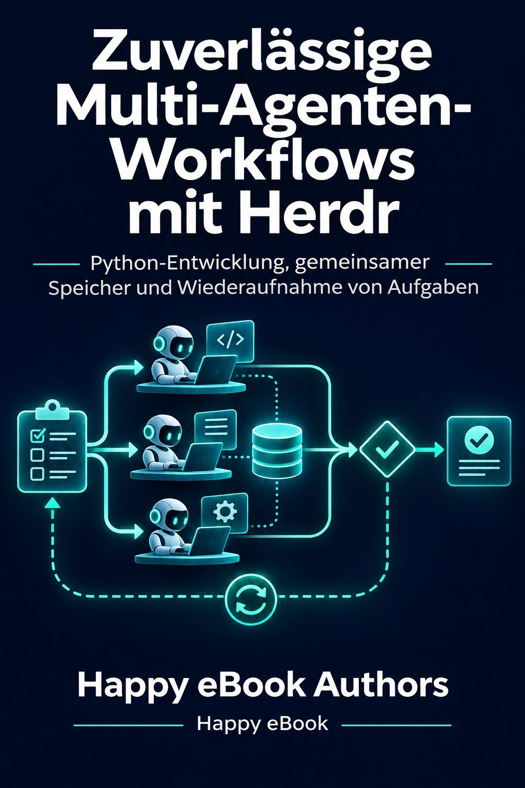

Zuverlässige Multi-Agenten-Workflows mit Herdr
Python-Entwicklung, gemeinsamer Speicher und Wiederaufnahme von Aufgaben

Zuverlässige Multi-Agenten-Workflows mit Herdr
Python-Entwicklung, gemeinsamer Speicher und Wiederaufnahme von Aufgaben
Ein Team aus KI-Agenten entsteht nicht dadurch, dass man mehrere Chatfenster öffnet. Zuverlässige Zusammenarbeit braucht klare Rollen, überprüfbare Verträge und einen Plan, um Fehler zu erkennen und Arbeit wieder aufzunehmen. Dieses praxisorientierte Buch zeigt, wie du Herdrs textbasierte Terminaloberfläche (TUI) als Kontrollebene und Python für reproduzierbare Arbeitsabläufe einsetzt. Der Weg führt vom kleinen Rechner über eine Aufgabenverwaltungs-Website mit fünf Rollen und ein technisches Rechercheteam bis zu einer automatisierten Pipeline und einer persistenten, wiederherstellbaren Warteschlange. Du lernst unter anderem: • Aufgaben, Dateiverantwortung und Abnahmekriterien vor der Delegation festzulegen; • Developer, QA und Reviewer über gemeinsame Schnittstellen zu koordinieren; • unabhängige Code-Reviews mit reproduzierbaren Befunden durchzuführen; • Übergaben mit gemeinsamem Speicher und Hash-Prüfungen abzusichern; • API-, Recherche- und Testergebnisse anhand konkreter Belege abzunehmen; • Timeouts, Wiederholungen, Nebenläufigkeit und veraltete Besitzer zu behandeln. Die Beispiele richten sich an Entwickler, Lehrkräfte, Selbstlernende und kleine Teams mit Grundkenntnissen in Terminal, Python, JSON und Git. Das Begleitpaket enthält Code, Tests, Rollenprompts und Anleitungen. Die Referenztests lassen sich ohne Modellgewichte ausführen; echte Agenten benötigen Herdr und eine konfigurierte Agenten-CLI. Eine praktische Anleitung, um aus Agentenantworten nachvollziehbare Ergebnisse zu machen – mit klaren Zuständigkeiten, überprüfbaren Artefakten und reproduzierbaren Tests.
作品介紹；目前未提供購買或試閱入口